Salon of 1846
On Portraiture
Du portrait
Il y a deux manières de comprendre le portrait, — l’histoire et le roman.
There are two ways of understanding portraiture: history and the novel.
L’une est de rendre fidèlement, sévèrement, minutieusement, le contour et le modelé du modèle, ce qui n’exclut pas l’idéalisation, qui consistera pour les naturalistes éclairés à choisir l’attitude la plus caractéristique, celle qui exprime le mieux les habitudes de l’esprit ; en outre, de savoir donner à chaque détail important une exagération raisonnable, de mettre en lumière tout ce qui est naturellement saillant, accentué et principal, et de négliger ou de fondre dans l’ensemble tout ce qui est insignifiant, ou qui est l’effet d’une dégradation accidentelle.
One is to render faithfully, severely, and minutely the contour and modeling of the sitter. This does not exclude idealization, which for enlightened naturalists consists in choosing the most characteristic attitude, the one that best expresses habits of mind; further, in knowing how to give every important detail a reasonable exaggeration, to bring into relief everything naturally salient, accented, and principal, and to neglect or merge into the whole whatever is insignificant or merely the effect of an accidental deterioration.
Les chefs de l’école historique sont David et Ingres ; les meilleurs exemples sont les portraits de David qu’on a pu voir à l’Exposition Bonne-Nouvelle, et ceux de M. Ingres, comme MM. Bertin et Cherubini.
The leaders of the historical school are David and Ingres; the best examples are David's portraits that could be seen at the Bonne-Nouvelle exhibition, and those by M. Ingres, such as MM. Bertin and Cherubini.
La seconde méthode, celle particulière aux coloristes, est de faire du portrait un tableau, un poëme avec ses accessoires, plein d’espace et de rêverie. Ici l’art est plus difficile, parce qu’il est plus ambitieux. Il faut savoir baigner une tête dans les molles vapeurs d’une chaude atmosphère, ou la faire sortir des profondeurs d’un crépuscule. Ici, l’imagination a une plus grande part, et cependant, comme il arrive souvent que le roman est plus vrai que l’histoire, il arrive aussi qu’un modèle est plus clairement exprimé par le pinceau abondant et facile d’un coloriste que par le crayon d’un dessinateur.
The second method, peculiar to colorists, is to make the portrait into a painting, a poem with its accessories, full of space and reverie. Here art is more difficult because it is more ambitious. One must know how to bathe a head in the soft vapors of a warm atmosphere, or make it emerge from the depths of twilight. Imagination plays a greater part here, and yet, just as the novel is often truer than history, a sitter may also be more clearly expressed by the abundant and easy brush of a colorist than by the pencil of a draughtsman.
Les chefs de l’école romantique sont Rembrandt, Reynolds, Lawrence. Les exemples connus sont la Dame au chapeau de paille et le jeune Lambton .
The leaders of the Romantic school are Rembrandt, Reynolds, and Lawrence. Familiar examples are The Lady with the Straw Hat and the Young Lambton.
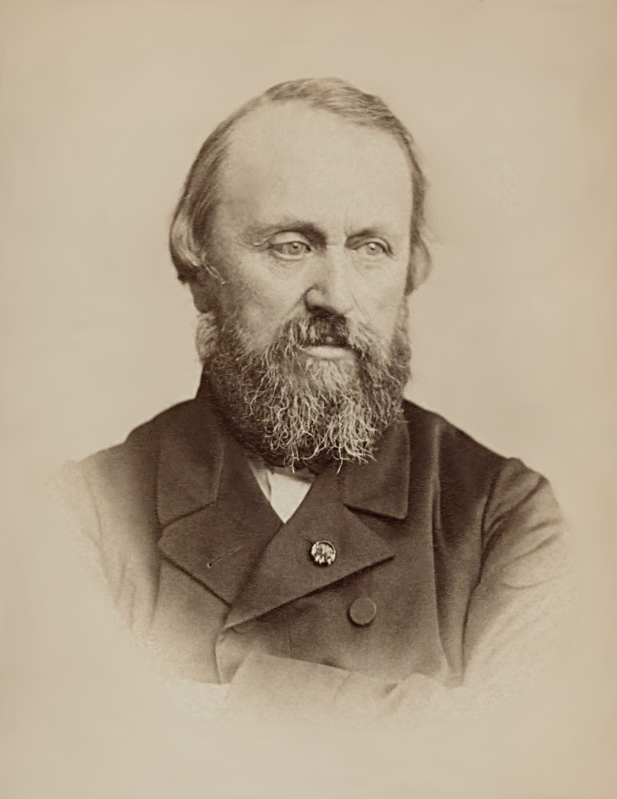
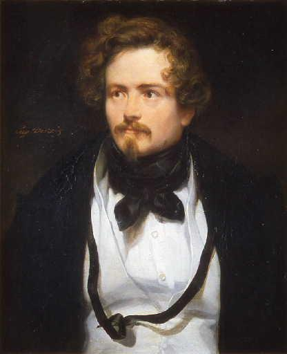
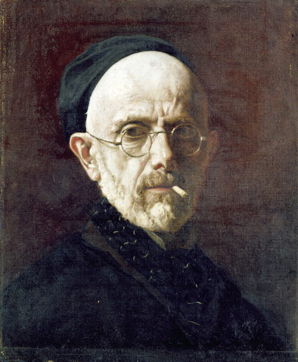
En général, MM. Flandrin, Amaury-Duval et Lehman , ont cette excellente qualité, que leur modelé est vrai et fin. Le morceau y est bien conçu, exécuté facilement et tout d’une haleine ; mais leurs portraits sont souvent entachés d’une afféterie prétentieuse et maladroite. Leur goût immodéré pour la distinction leur joue à chaque instant de mauvais tours. On sait avec quelle admirable bonhomie ils recherchent les tons distingués , c’est-à-dire des tons qui, s’ils étaient intenses, hurleraient comme le diable et l’eau bénite, comme le marbre et le vinaigre ; mais comme ils sont excessivement pâlis et pris à une dose homéopathique , l’effet en est plutôt surprenant que douloureux : c’est là le grand triomphe !
In general, MM. Flandrin, Amaury-Duval, and Lehmann possess this excellent quality: their modeling is true and delicate. The passage is well conceived, easily executed, and done in one breath; but their portraits are often tainted by an affected and clumsy preciosity. Their immoderate taste for distinction constantly plays tricks on them. We know with what admirable straightforwardness they seek ‘distinguished tones’—tones which, if they were intense, would howl like the devil and holy water, like marble and vinegar; but because they are excessively faded and administered in homeopathic doses, the effect is more surprising than painful. There lies the great triumph!
La distinction dans le dessin consiste à partager les préjugés de certaines mijaurées, frottées de littératures malsaines, qui ont en horreur les petits yeux, les grands pieds, les grandes mains, les petits fronts et les joues allumées par la joie et la santé, — toutes choses qui peuvent être fort belles.
Distinction in drawing consists in sharing the prejudices of certain affected ladies, rubbed with unhealthy literature, who abhor small eyes, large feet, large hands, low foreheads, and cheeks flushed by joy and health—all things that may be very beautiful.
Cette pédanterie dans la couleur et le dessin nuit toujours aux œuvres de ces messieurs, quelque recommandables qu’elles soient d’ailleurs. Ainsi, devant le portrait bleu de M. Amaury-Duval et bien d’autres portraits de femmes ingristes ou ingrisées, j’ai senti passer dans mon esprit, amenées par je ne sais quelle association d’idées, ces sages paroles du chien Berganza, qui fuyait les bas- bleus aussi ardemment que ces messieurs les recherchent : « Corinne ne t’a-t-elle jamais paru insupportable ? . . . . . . . . . . À l’idée de la voir s’approcher de moi, animée d’une vie véritable, je me sentais comme oppressé par une sensation pénible, et incapable de conserver auprès d’elle ma sérénité et ma liberté d’esprit. . . . . . . . . . Quelque beaux que pussent être son bras ou sa main, jamais je n’aurais pu supporter ses caresses sans une certaine répugnance, un certain frémissement intérieur qui m’ôte ordinairement l’appétit. — Je ne parle ici qu’en ma qualité de chien ! »
This pedantry in color and drawing always harms the works of these gentlemen, however commendable they may otherwise be. Thus, before M. Amaury-Duval's blue portrait and many other female portraits by Ingres's followers or those infected with Ingres, I have felt passing through my mind, brought by some association of ideas, these wise words of the dog Berganza, who fled bluestockings as ardently as these gentlemen seek them: ‘Has Corinne never seemed unbearable to you? … At the thought of seeing her approach me, animated by real life, I felt oppressed by a painful sensation and unable to preserve beside her my serenity and freedom of mind… However beautiful her arm or hand might be, I could never have endured her caresses without a certain repugnance, an inward shudder that ordinarily takes away my appetite.—I speak here only in my capacity as a dog!’
J’ai éprouvé la même sensation que le spirituel Berganza devant presque tous les portraits de femmes, anciens ou présents, de MM. Flandrin, Lehmann et Amaury-Duval, malgré les belles mains, réellement bien peintes, qu’ils savent leur faire, et la galanterie de certains détails. Dulcinée de Toboso elle-même, en passant par l’atelier de ces messieurs, en sortirait diaphane et bégueule comme une élégie, et amaigrie par le thé et le beurre esthétiques.
I have felt the same sensation as the witty Berganza before almost all the old and present portraits of women by MM. Flandrin, Lehmann, and Amaury-Duval, despite the beautiful hands—genuinely well painted—that they know how to give them, and the gallantry of certain details. Dulcinea del Toboso herself, passing through these gentlemen's studios, would emerge diaphanous and prudish as an elegy, thinned by aesthetic tea and butter.
Ce n’est pourtant pas ainsi, — il faut le répéter sans cesse, — que M. Ingres comprend les choses, le grand maître !
Yet this is not how M. Ingres, the great master, understands things; it must be repeated without ceasing!
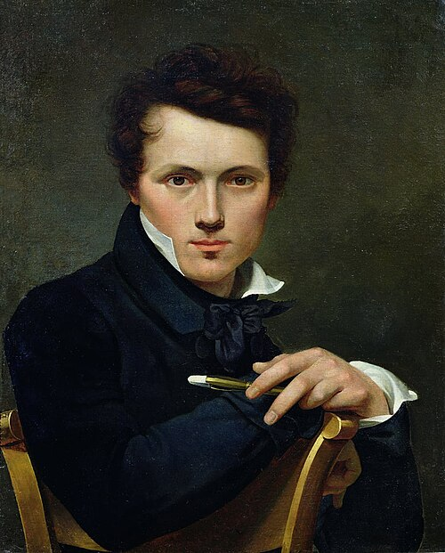
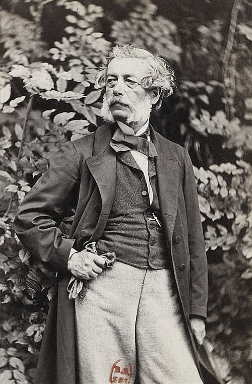
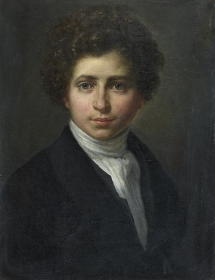
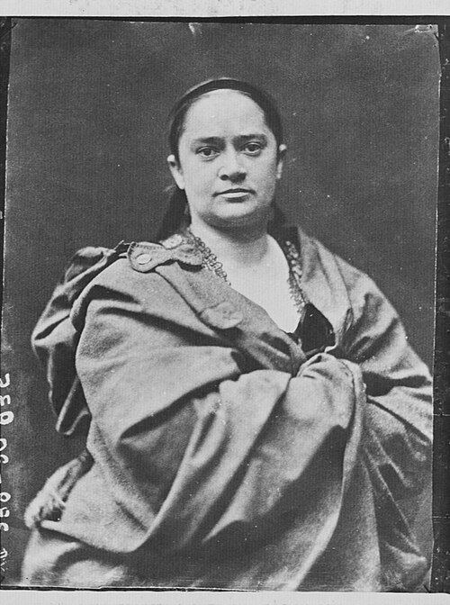
Dans le portrait compris suivant la seconde méthode, MM. Dubufe père, Winterhalter , Lépaulle et M me Frédérique O’Connel , avec un goût plus sincère de la nature et une couleur plus sérieuse, auraient pu acquérir une gloire légitime.
In portraiture understood according to the second method, M. Dubufe the elder, Winterhalter, Lépaulle, and Mme Frédérique O'Connell, with a more sincere taste for nature and more serious color, might have acquired legitimate glory.
M. Dubufe aura longtemps encore le privilège des portraits élégants ; son goût naturel et quasi poétique sert à cacher ses innombrables défauts.
M. Dubufe will retain for a long time the privilege of elegant portraits; his natural, almost poetic taste helps conceal his innumerable faults.
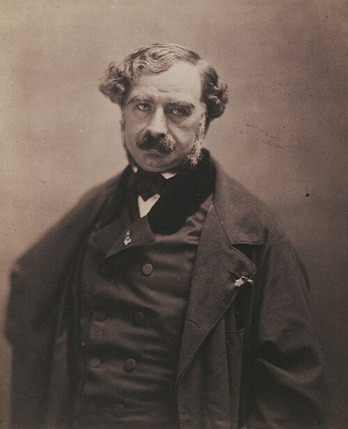
Il est à remarquer que les gens qui crient tant haro sur le bourgeois, à propos de M. Dubufe, sont les mêmes qui se sont laissé charmer par les têtes de bois de M. Pérignon . Qu’on aurait pardonné de choses à M. Delaroche, si l’on avait pu prévoir la fabrique Pérignon !
It is worth noting that the people who raise such a cry against the bourgeois in connection with M. Dubufe are the same people who let themselves be charmed by M. Pérignon's wooden heads. How much people would have forgiven M. Delaroche if they could have foreseen the Pérignon factory!
M. Winterhalter est réellement en décadence. — M. Lépaulle est toujours le même, un excellent peintre parfois, toujours dénué de goût et de bon sens. — Des yeux et des bouches charmantes, des bras réussis, — avec des toilettes à faire fuir les honnêtes gens !
M. Winterhalter is truly in decline. M. Lépaulle is always the same: sometimes an excellent painter, always devoid of taste and good sense. Charming eyes and mouths, successful arms—with costumes capable of making honest people flee!
Mme O’Connel sait peindre librement et vivement ; mais sa couleur manque de consistance. C’est le malheureux défaut de la peinture anglaise, transparente à l’excès et toujours douée d’une trop grande fluidité.
Mme O'Connell knows how to paint freely and vividly; but her color lacks substance. This is the unfortunate defect of English painting, excessively transparent and always endowed with too much fluidity.
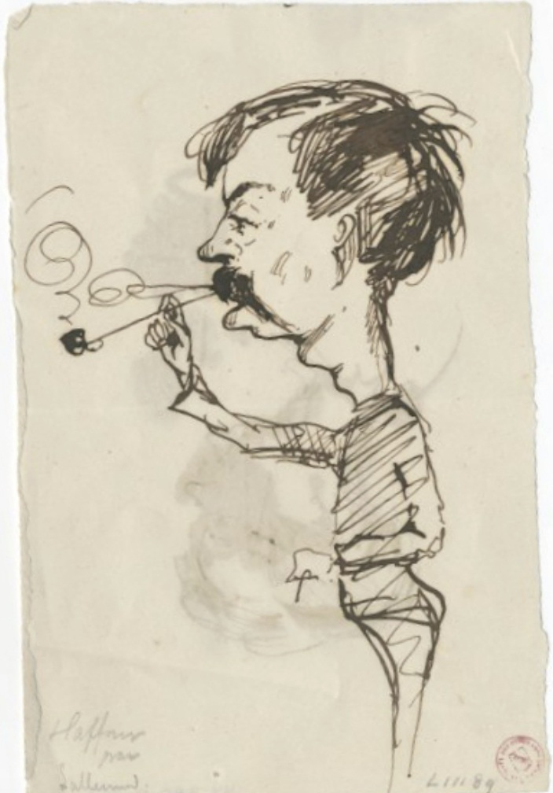
Un excellent exemple du genre de portraits dont je voulais tout à l’heure caractériser l’esprit est ce portrait de femme, par M. Haffner , — noyé dans le gris et resplendissant de mystère, — qui, au Salon dernier, avait fait concevoir de si hautes espérances à tous les connaisseurs. Mais M. Haffner n’était pas encore un peintre de genre, cherchant à réunir et à fondre Diaz, Decamps et Troyon.
An excellent example of the kind of portrait whose spirit I was trying to characterize just now is that portrait of a woman by M. Haffner—drowned in gray and radiant with mystery—which at the last Salon gave all connoisseurs such high hopes. But M. Haffner was not yet a genre painter trying to bring together and fuse Diaz, Decamps, and Troyon.

On dirait que M me E. Gautier cherche à amollir un peu sa manière. Elle a tort.
One would say Mme E. Gautier is trying to soften her manner somewhat. She is wrong.

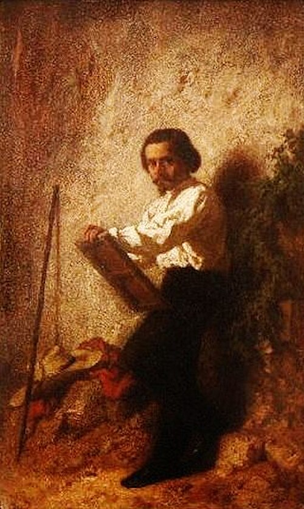
MM. Tissier et J. Guignet ont conservé leur touche et leur couleur sûres et solides. En général, leurs portraits ont cela d’excellent qu’ils plaisent surtout par l’aspect, qui est la première impression et la plus importante.
MM. Tissier and J. Guignet have retained their sure, solid touch and color. In general, their portraits possess this excellent quality: they please above all by their appearance, which is the first and most important impression.

M. Victor Robert , l’auteur d’une immense allégorie de l’Europe, est certainement un bon peintre, doué d’une main ferme ; mais l’artiste qui fait le portrait d’un homme célèbre ne doit pas se contenter d’une pâte heureuse et superficielle ; car il fait aussi le portrait d’un esprit. M. Granier de Cassagnac est beaucoup plus laid, ou, si l’on veut, beaucoup plus beau. D’abord le nez est plus large, et la bouche, mobile et irritable, est d’une malice et d’une finesse que le peintre a oubliées. M. Granier de Cassagnac a l’air plus petit et plus athlétique, — jusque dans le front. Cette pose est plutôt emphatique que respirant la force véritable, qui est son caractère. Ce n’est point là cette tournure martiale et provocante avec laquelle il aborde la vie et toutes ses questions. Il suffit de l’avoir vu fulminer à la hâte ses colères, avec des soubresauts de plume et de chaise, ou simplement de les avoir lues, pour comprendre qu’il n’est pas là tout entier. Le Globe , qui fuit dans la demi-teinte, est un enfantillage, — ou bien il fallait qu’il fût en pleine lumière !
M. Victor Robert, author of an immense allegory of Europe, is certainly a good painter with a firm hand; but the artist who paints the portrait of a famous man must not be content with a happy, superficial handling, for he is also painting a mind. M. Granier de Cassagnac is much uglier—or, if you prefer, much more beautiful. First, the nose is broader, and the mobile, irritable mouth has a malice and finesse the painter forgot. M. Granier de Cassagnac looks shorter and more athletic, even in the forehead. This pose is emphatic rather than expressive of the true strength that is his character. It is not the martial and provocative bearing with which he attacks life and all its questions. One need only have seen him rapidly thunder out his angers, with sudden jerks of pen and chair, or simply have read them, to understand that he is not wholly present here. The Globe fading into half-tone is childish—or else it ought to have been in full light!
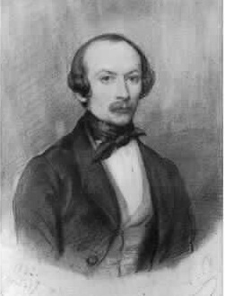
J’ai toujours eu l’idée que M. L. Boulanger eût fait un excellent graveur ; c’est un ouvrier naïf et dénué d’invention qui gagne beaucoup à travailler sur autrui. Ses tableaux romantiques sont mauvais, ses portraits sont bons, — clairs, solides, facilement et simplement peints ; et, chose singulière, ils ont souvent l’aspect des bonnes gravures faites d’après les portraits de Van Dick. Ils ont ces ombres denses et ces lumières blanches des eaux-fortes vigoureuses. Chaque fois que M. L. Boulanger a voulu s’élever plus haut, il a fait du pathos. Je crois que c’est une intelligence honnête, calme et ferme, que les louanges exagérées des poëtes ont seules pu égarer.
I have always thought M. L. Boulanger would have made an excellent engraver. He is a naïve craftsman without invention who gains much by working on the work of others. His Romantic paintings are bad; his portraits are good—clear, solid, easily and simply painted—and, strangely enough, often have the appearance of good engravings after portraits by Van Dyck. They have the dense shadows and white lights of vigorous etchings. Whenever M. L. Boulanger has tried to rise higher, he has produced pathos. I believe he has an honest, calm, firm intelligence, and that only the exaggerated praise of poets could have led him astray.
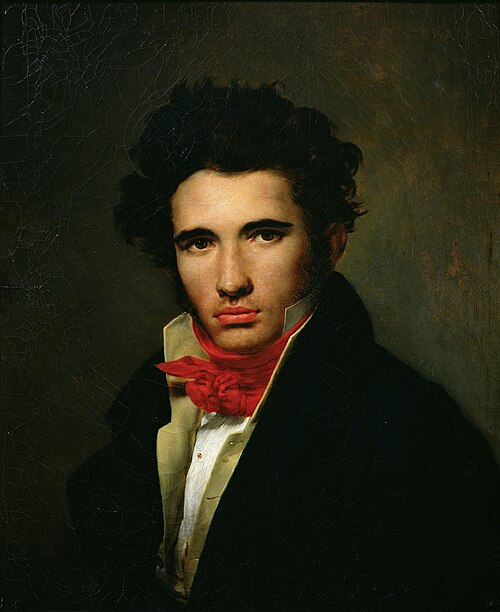
Que dirai-je de M. L. Cogniet , cet aimable éclectique, ce peintre de tant de bonne volonté et d’une intelligence si inquiète que, pour bien rendre le portrait de M. Granet, il a imaginé d’employer la couleur propre aux tableaux de M. Granet, — laquelle est généralement noire, comme chacun sait depuis longtemps.
What shall I say of M. L. Cogniet, that amiable eclectic, that painter of so much goodwill and such anxious intelligence that, to render M. Granet's portrait properly, he imagined using the color peculiar to M. Granet's paintings—which, as everyone has long known, is generally black.
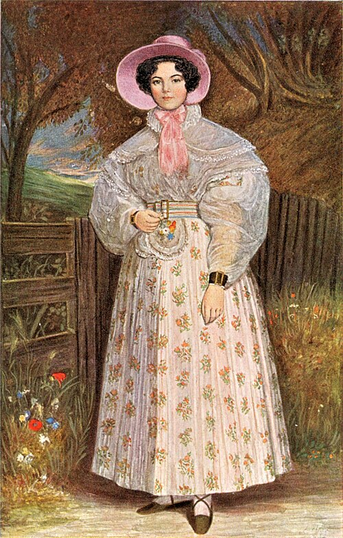
M me de Mirbel est le seul artiste qui sache se tirer d’affaire dans ce difficile problème du goût et de la vérité. C’est à cause de cette sincérité particulière, et aussi de leur aspect séduisant, que ses miniatures ont toute l’importance de la peinture.
Mme de Mirbel is the only artist who knows how to get herself out of this difficult problem of taste and truth. Because of this particular sincerity, and also because of their seductive appearance, her miniatures possess all the importance of painting.